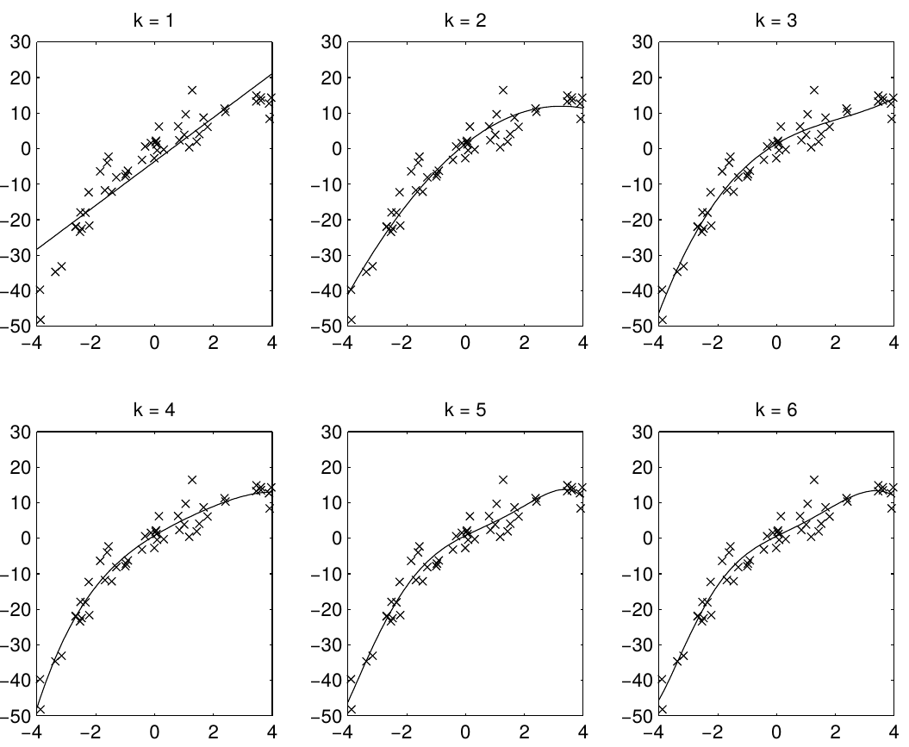
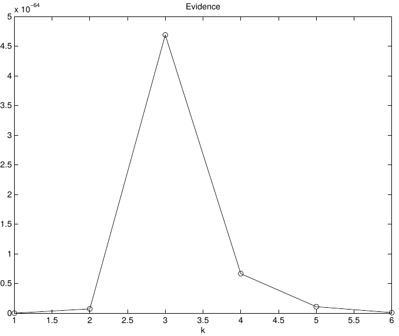
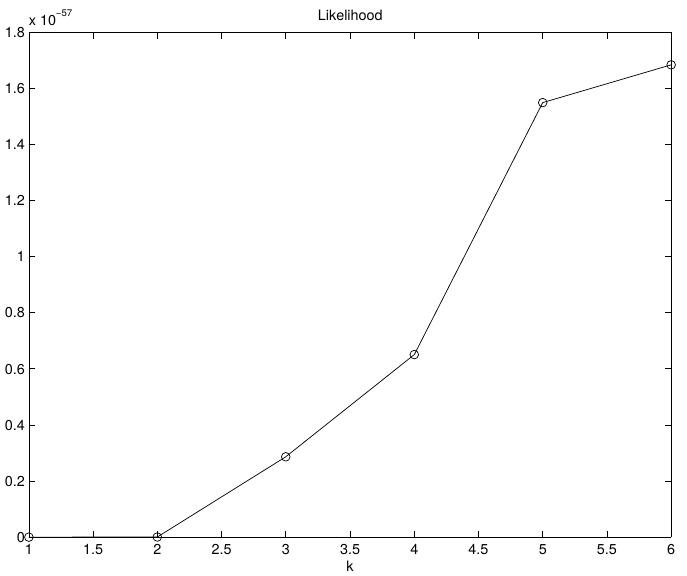

Bayesian Model Selection
In a 1935 paper and in his book Theory of Probability, Jeffreys developed a methodology for quantifing the evidence in favor of a scientific theory. The most referenced article about Bayesian statistics [1] focuses on this result as a practical tool of applied statistics. There are good texts, sach as [2], with several examples that allow us to appreciate how it works.
To my surprise I found in the most cited Handbook on Bayesian inference [3], only a single reference on this method, discouraging its use! And of the only page that he spent on that really big book, the only thing I could get out is a reference to a discussion [4-5] that this author had in 1994.
- 1. Robert Kass and Adrian Raftery. Bayes Factors. 1995. Journal of the American Statistical Association.
- 2. Tom Minka. Bayesian linear regression. 1998. (from personal web)
- 3. Gelman et al. Bayesian Data Analysis. 2013. Chapman and Hall/CRC
- 4. Adrian Raftery. Bayesian Model Selection in Social Research (with Discussion). 1995. Sociological Methodology.
- 5. Andrew Gelman and Donald Rubin. Avoiding Model Selection in Bayesian Social Research. 1995. Sociological Methodology.
After having read this discussion, I personally have no doubt that Raftery was right. The arguments can be found in the texts, cited above, that I would like you to also read firsthand. However, we can also mention some “context reasons”. Twenty-five years later we can count the references that each position received, and in this respect there is also a clear winner. In addition, the attitude of Gelman to avoid the subject in his Handbook, offering only the reference to the discussion, does not seem anything other than a sign of defeat.
Evidence in favor of a scientific theory
To compute the evidence that a specific data set D provides in favor of a specific model $M_k$, we need to solve
$$ P(M_k|D)$$
which by definition of conditional probability is
$$ P(M_k|D) = \frac{P(D|M_k)P(M_k)}{\sum_i P(D|M_i)P(M_i)} $$
But, if we only want to compare models, it is enough to compute their evidence ratio, which simplify the formula to
$$\frac{P(M_1|D)}{P(M_2|D)} = \frac{P(D|M_1)}{P(D|M_2)}\frac{P(M_1)}{P(M_2)}$$
Overlooking the omnipresent prior definition, the model selection depends only on the “marginal likelihood” of each model, an element that we compute every time in bayesian inference!!
$$\text{Bayes factor}=\frac{P(D|M_1)}{P(D|M_2)}$$
Bayesian model selection uses the rules of probability theory to select among different hypotheses. It automatically encodes a preference for simpler, more constrained models, as illustrated below. Simple models, e.g. linear regression, only fit a small fraction of data sets. But they assign correspondingly higher probability to those data sets. Flexible models spread themselves out more thinly.
A central issue in polynomial fitting is selecting the degree of the polynomial. To do this, we compute the probability of the data for each possible degree. For a given degree, this requires integrating over all possible polynomial fits, which can be done analytically. The results are shown below.

The likelihood only considers the single most probable curve, as shown for each degree. The likelihood is the negative squared-error of the fit. It always increases with increasing degree. But the evidence reaches a maximum at degree 3, which happens to be the true degree in this case. The data is much more likely to have arisen from a third-degree polynomial than a high-degree polynomial which just happened to look third-degree.
 